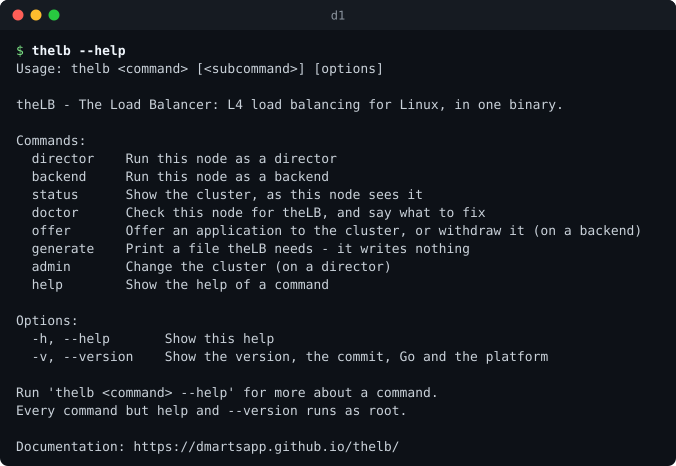

Reference
Commands
Every theLB command and flag on one page.
Overview#
Every command except --help and --version runs only as root. The exit status is 0 when it worked, 1 when it failed, and 2 when the command was used wrongly. thelb <command> --help shows a command's flags.
thelb director --vip <address|name> --port <port> --secret-file <file> --backend-secret-file <file>
[--bootstrap] [--cluster <name>] [--name <name>] [--interface <name>] [--metrics <address:port>] [--debug]
thelb backend --join <address|name>:<port> --secret-file <file> [--offer [<name>=]<proto>/<port>[,check=tcp|none|http:<path>] ...]
[--name <name>] [--interface <name>] [--metrics <address:port>]
thelb offer add <name> <proto>/<port>[,check=tcp|none|http:<path>] (on a backend)
thelb offer remove <name> (on a backend)
thelb status [--json] [--watch] [--role director|backend] [directors|backends|offers|vips|all|<table> ...]
thelb doctor [--role director|backend] [--vip <control VIP>] [--port <control port>] [--json]
thelb generate secret
thelb generate commands
thelb generate systemd director|backend <the flags it runs with>
thelb generate sysctl director|backend
thelb generate modules director|backend
thelb admin approve <name> ... | --match '<regex>' [--yes]
thelb admin refuse <name>
thelb admin remove <name>
thelb admin pool add <name> --vip <first/prefix> --vippool-count <n> [--interface <name>] [--default]
thelb admin pool remove <name>
thelb admin service add <name> --proto tcp|udp|sctp --port <port> [--pool <name>] [--vip <address>]
[--scheduler wrr|rr|wlc|lc|sh|mh] [--method direct|tunnel]
thelb admin service remove <name>
thelb admin assign <service> <node>:<offer> ... [--weight <node>=<n>,...]
thelb admin unassign <service> <node>
thelb admin lease <seconds>
thelb admin secret show --role director|backend
thelb --versionthelb director#
Runs a director. See Directors and failover.
| Flag | Meaning |
|---|---|
--vip | the control VIP: an unused address in the directors' network, or a name that resolves to one |
--port | the control port, TCP |
--secret-file, --backend-secret-file | the two secret files - absolute paths, two different files |
--bootstrap | create the cluster if none is found after 5 seconds (and any missing secret file) |
--cluster | the cluster's name, when this director creates it; thelb by default |
--name | this node's name; the hostname by default |
--interface | the control VIP's interface, when it is not the one in its network |
--metrics | serve Prometheus metrics on this address and port; not 0.0.0.0 or :: |
--debug | log each new connection while leading - see --debug |
thelb backend#
Runs a backend. See Backends and offers.
| Flag | Meaning |
|---|---|
--join | the control VIP and port, address:port |
--secret-file | the backend secret file |
--offer | an application to offer, [name=]proto/port[,check=...]; repeat for more |
--name, --interface, --metrics | as for a director |
thelb offer#
On a backend, while it runs: offer add <name> <proto>/<port>[,check=...] offers an application - the leader checks it first - and offer remove <name> withdraws one, ending its assignments.
thelb status#
Shows the cluster as this node sees it. On a director, the whole cluster; on a backend, only that backend. See Reading thelb status.
| Argument or flag | Meaning |
|---|---|
| (none) | the summary |
directors, backends, offers, vips, all | a view |
cluster, nodes, certificates, pending, pools, offers, services | single tables, by name; several at once are fine |
--json | JSON instead of tables |
--watch | again every 2 seconds |
--role | on a machine with both a director and a backend, which one to ask |
thelb doctor#
Checks this machine for theLB and changes nothing. See Troubleshooting.
| Flag | Meaning |
|---|---|
--role | check for this role only; by default, the roles running here, or both |
--vip, --port | the control VIP and port, where no director runs yet - for the plan and the firewall commands |
--json | JSON instead of a table |
thelb generate#
Prints something for you to keep or install. It never changes the machine.
| Command | Prints |
|---|---|
generate secret | a new secret, for a secret file |
generate commands | the thelb admin commands that create the cluster's pools, services and assignments again - Keeping them |
generate systemd director|backend <flags> | a systemd unit - Running under systemd |
generate sysctl director|backend | the kernel settings theLB sets, for /etc/sysctl.d |
generate modules director|backend | the kernel modules theLB uses, for /etc/modules-load.d |
thelb admin#
Changes the cluster. Runs on a director; on a director that is not the leader, the change goes to the leader, recorded under that director's name.
| Command | Does |
|---|---|
approve <name> ... / --match '<regex>' [--yes] | approve waiting nodes - Secrets and approval |
refuse <name> | refuse a waiting node; it stops |
remove <name> | remove a member; its certificate is revoked |
pool add / pool remove | pools |
service add / service remove | services |
assign / unassign | assignments; an offer is node:name or node:proto/port |
lease <seconds> | the VIP lease, 3 to 3600 seconds - The leader and the VIP lease |
secret show --role director|backend | print a secret, to repair a node's file |
thelb --help#

As text
$ thelb --help
theLB - The Load Balancer: L4 load balancing for Linux, in one binary.
Usage:
thelb <command> [flags]
Commands:
director run this node as a director
backend run this node as a backend
status show the cluster, from the theLB running on this node
doctor check this node for theLB, and say what to do
offer on a backend: offer an application to the cluster, or withdraw it
generate print a file's content, and write nothing: secret, commands,
systemd, sysctl, modules
admin change the cluster, on a director: approve, refuse, remove,
pool, service, assign, unassign, lease, secret show
Every command runs only as root (effective user ID 0); this help and --version
run for anyone.
thelb <command> --help a command's flags
thelb --version the version, the commit, Go and the platform
The documentation: https://dmartsapp.github.io/thelb/